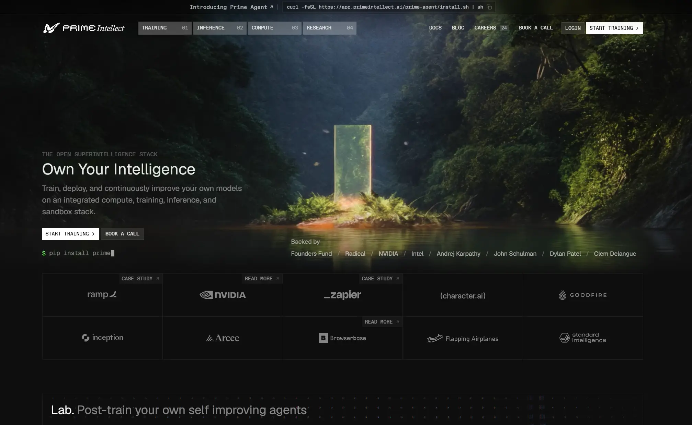

Prime Intellect
- Многостраничный
- Сервисы и приложения
- ИИ-сервисы
- Разработчикам
- Продуктовым командам
- Брутализм
- Утилитарный техно
- Тёмная тема
- Нейтральный фон
- Тёмная тема по умолчанию
- Микроанимации
- Next.js
- React
- Vercel
- Tailwind CSS
- Google Tag Manager
- Английский язык
- США
- Действующий сайт

Что это
Сайт компании Prime Intellect — платформы, где можно обучить и развернуть собственную ИИ-модель: вычисления, тренировка, ответы модели и изолированные песочницы собраны в одном месте. Для разработчиков и продуктовых команд, которым нужна своя модель, а не чужая. Брутальный технологичный сайт платформы для обучения и развёртывания собственных ИИ-моделей.
Что смотреть в первую очередь
Смотреть первый экран с кольцом TRAIN / DEPLOY / IMPROVE и сетку логотипов с ярлыками CASE STUDY. Главная отдаётся потоком — HTTP 200 приходит сразу, но соединение не закрывается, поэтому полный HTML не скачивается и факты собраны по началу страницы и служебным адресам.
Приёмы
- Тёмная тема по умолчанию
- Микроанимации
Интересные факты
- Заголовок «THE OPEN SUPERINTELLIGENCE STACK» на экране больше не показывается — он остался только в title и тегах для соцсетей.
- Первый экран теперь строит тонкое SVG-кольцо вокруг заголовка «Own Your Intelligence»: по кругу подписи TRAIN, DEPLOY, IMPROVE и стрелка, которая вращается средствами CSS (класс refactor-ring-orbit).
- Шапка: четыре раздела — model factory, inference, compute и research — и счётчик вакансий (39).
- Подзаголовок сократили, а описание для поиска осталось прежним: на экране «Train and deploy custom AI models…», в meta description — старая длинная фраза про непрерывное улучшение моделей на стеке из вычислений, обучения, инференса и песочниц.
- Сетка логотипов клиентов (Ramp, NVIDIA, Zapier, Character.AI, Goodfire, Inception, Arcee, Browserbase) собрана из обычных ссылок-ячеек, а у части поверх угла ярлык CASE STUDY или READ MORE.
- Типографика техничная и брутальная: Favorit Sans подключён локально, кнопки квадратные и капсом, а стрелка в них на наведении выезжает из-за края (CSS-переход по классам group-hover).
- Счётчик всего один — Google Tag Manager (GTM-MDCS5S2X), а картинка для соцсетей до сих пор лежит на старом CDN Webflow (cdn.prod.website-files.com), хотя сайт давно собирается на Next.js и живёт на Vercel.
Паспорт
- Домен
- primeintellect.ai
- Тип сайта
- Многостраничный
- Категории
- Сервисы и приложения
- Подкатегории
- ИИ-сервисы
- Для кого
- Разработчикам, Продуктовым командам
- Стиль
- Брутализм, Утилитарный техно
- Язык
- Английский
- Страна
- США, Довер
- Автор
- Prime Intellect, Inc. — компания
- Год
- 2026
- Добавлен в коллекцию
- 03.11.2026
Палитра
-
#121312— 79% кадра -
#31393C— 14% кадра -
#566161— 3% кадра -
#595829— 2% кадра -
#7C817A— 1% кадра
- Режим
- Тёмная
- Цвет фона
- Нейтральный
Технологии
- Next.js
- React
- Vercel
- Tailwind CSS
- next/font
- Google Tag Manager